交通走廊完整拼装验收
72隧道状态；13桥型×双轴×公路/铁路×平跨及正负坡。桥头与north同姿源图逐像素核实，其他周期片复用已明确。全部路轨采真实原画；预览不等于Unity运行验证。
tunnels-all-climates 1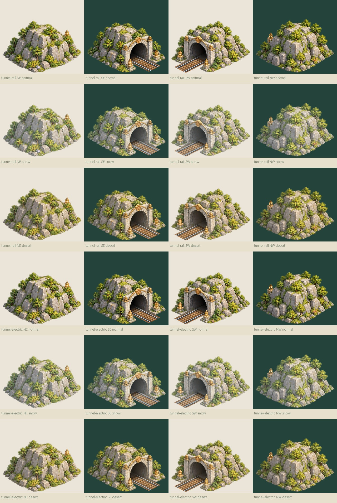
tunnels-all-climates 2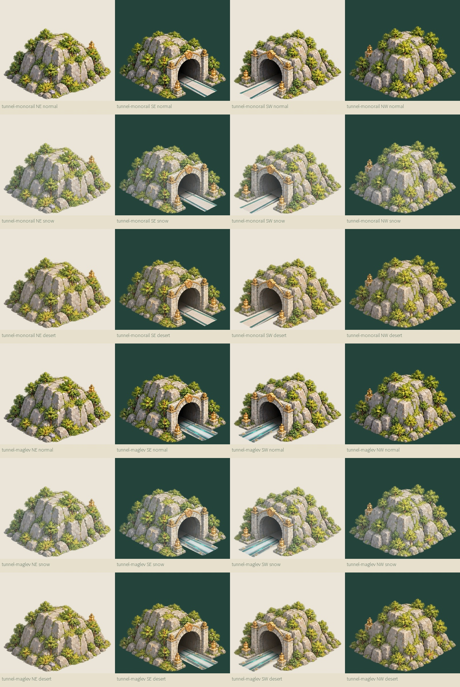
tunnels-all-climates 3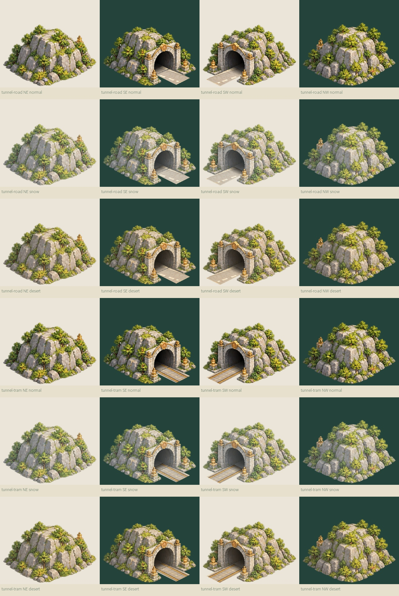
bridges-both-axes-road-rail-flat-and-ramps 1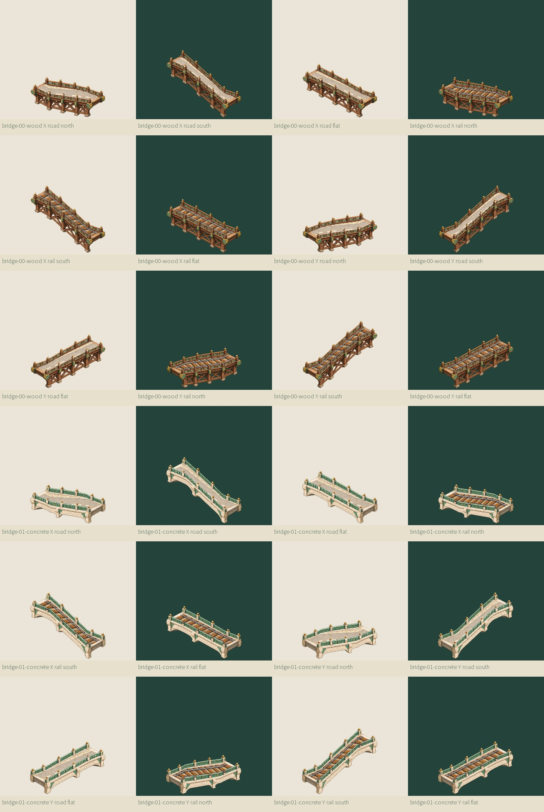
bridges-both-axes-road-rail-flat-and-ramps 2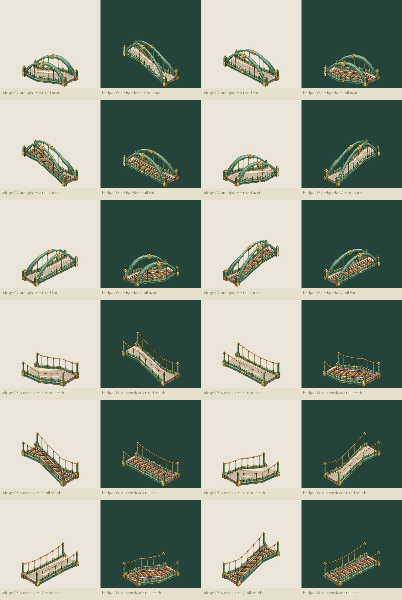
bridges-both-axes-road-rail-flat-and-ramps 3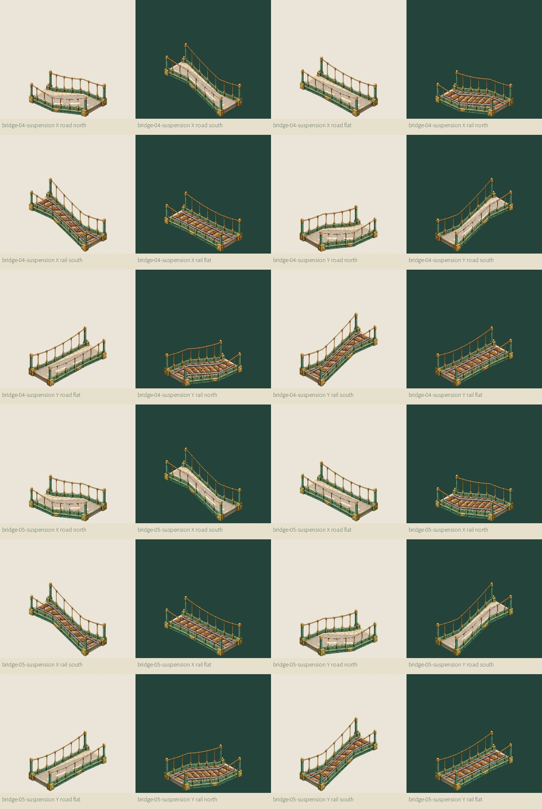
bridges-both-axes-road-rail-flat-and-ramps 4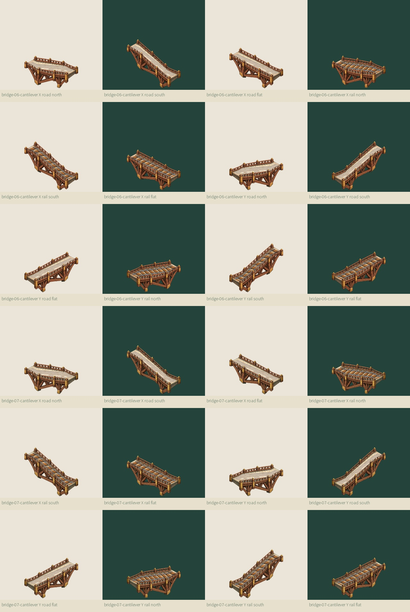
bridges-both-axes-road-rail-flat-and-ramps 5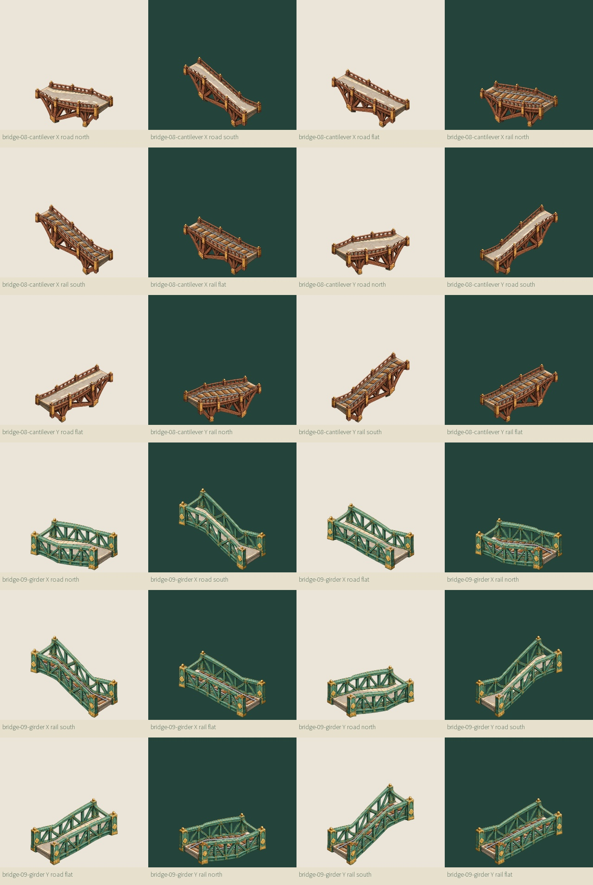
bridges-both-axes-road-rail-flat-and-ramps 6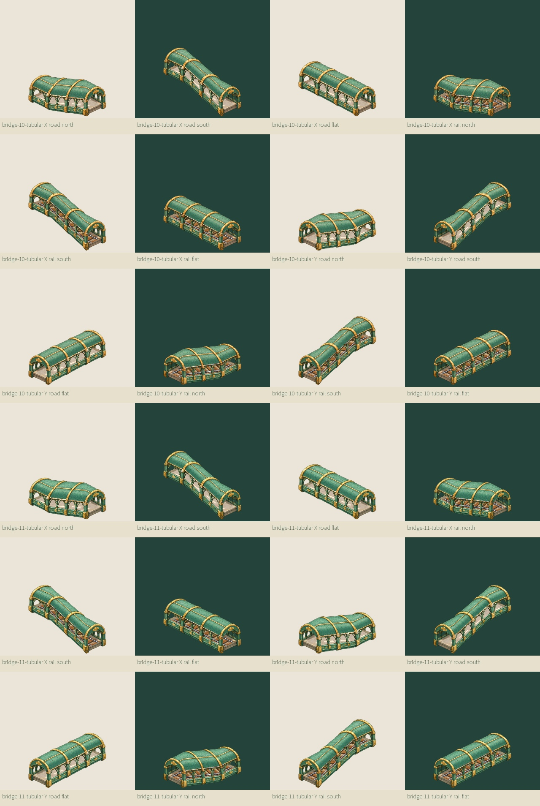
bridges-both-axes-road-rail-flat-and-ramps 7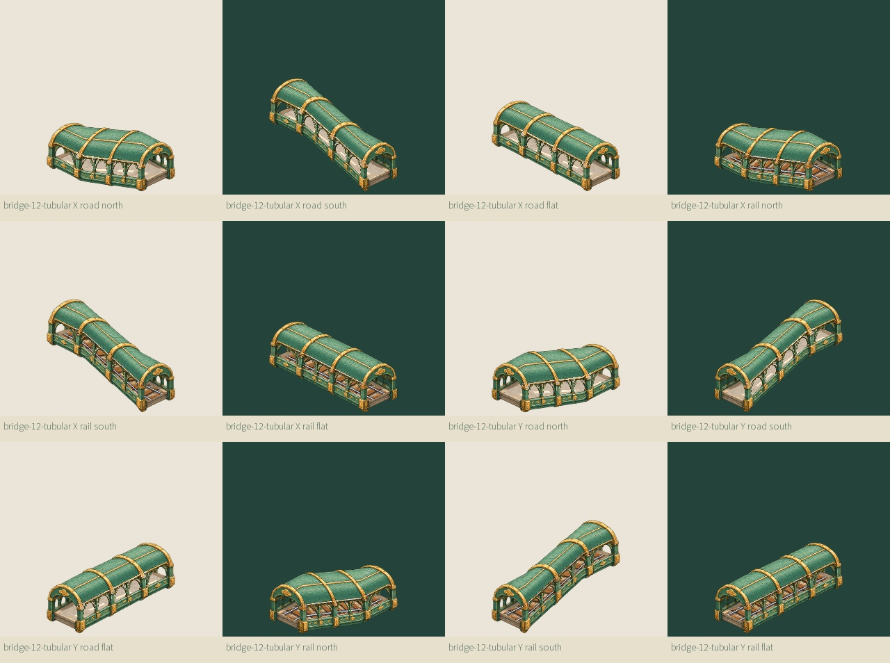
actual-painted-uv-materials 1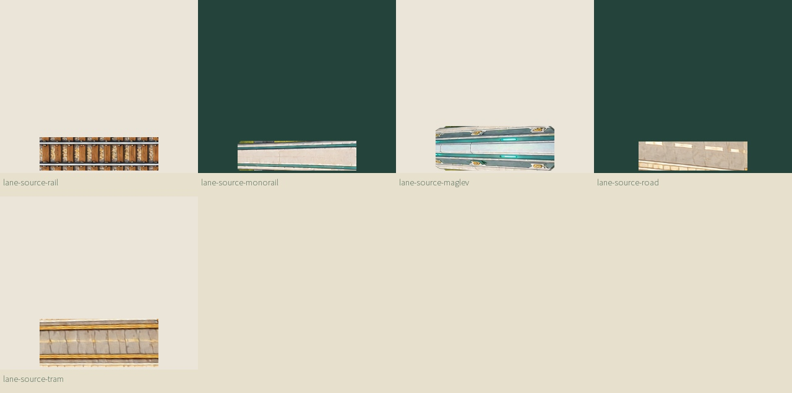
rail SE portal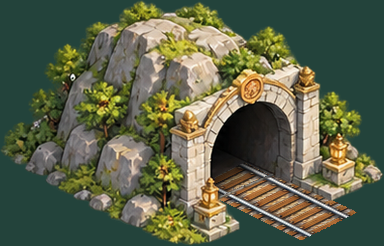
road SW portaltram SE portaltruss rail floor / foreground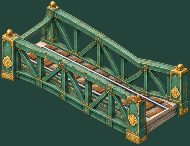
tubular Y rail under roof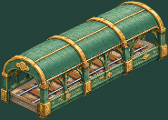
wood road +32 ramp